토목기사 (2004-09-05 기출문제)
1과목: 응용역학
1. 그림과 같이 두개의 활차를 사용하여 물체를 매달 때 3개의 물체가 평형을 이루기 위한 θ 값은? (단, 로우프와 활차의 마찰은 무시한다.)
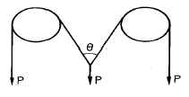
- 30°
- 45°
- 60°
- 120°
(정답률: 72%)

2. 그림과 같은 삼각형 물체에 x 방향으로 Px = 4t, y 방향으로 Py = √3 t 으로 잡아 당길 때 평형을 이루기 위한BC 면의 저항력 P 의 값은? (단, 물체는 단위 길이에 대하여 고려한다.)
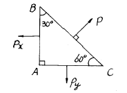
- 3.5 t
- 1.5 t
- 4.3 t
- 5.5 t
(정답률: 24%)
3. 30cm× 40cm× 200cm의 나무기둥에 P = 5ton 이 가해질 때 길이의 변형량은? (단, 목재의 탄성계수 E = 85× 103 kg/cm2 이다.)
- 1.0091 cm
- 0.1010 cm
- 0.0101 cm
- 0.0098 cm
(정답률: 34%)
4. 어떤 요소를 스트레인 게이지로 계측하여 이 요소의 x방향 변형율 εx = 2.67 x 10-4, y 방향 변형율 εy = 6.07x10-4을 얻었다면 x 방향의 응력 σx는 얼마인가? (단, 이 요소의 프와송비:0.3, 탄성계수: 2x106 kg/cm2 )
- 654 kg/cm2
- 765 kg/cm2
- 876 kg/cm2
- 987 kg/cm2
(정답률: 24%)
5. 다음 그림과 같은 3활절 포물선 아아치의 수평반력은?
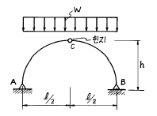
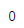
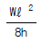
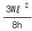
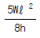
(정답률: 54%)
6. 그림에서 P1 이 단순보의 C점에 작용하였을 때 C 및 D점의 수직변위가 각각 0.4cm, 0.3cm 이고 P2 가 D점에 단독으로 작용하였을 때 C, D점의 수직변위는 0.2cm, 0.25cm였다. P1과 P2가 동시에 작용하였을 때의 일 W는?
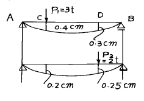
- W = 2.⑤ t·cm
- W = 1.45 t·cm
- W = 2.85 t·cm
- W = 1.90 t·cm
(정답률: 20%)
7. 다음 가상일의 원리에 대한 사항중 옳지 않은것은?
- 에너지 불변의 법칙이 성립된다.
- 단위하중법 이라고도 한다.
- 가상 변위는 임의로 선정할 수가 없다.
- 재료는 탄성한도 내에서 거동한다고 가정한다.
(정답률: 54%)
8. 다음 그림과 같은 보에서 A점의 반력을 구하면?
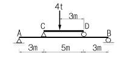
- 1.18t(↑ )
- 1.58t(↑ )
- 2.18t(↑ )
- 2.58t(↑ )
(정답률: 45%)
9. 다음 라멘에서 MD로 옳은 것은?
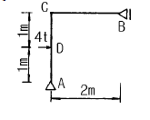
- 1t·m
- 2t·m
- 3t·m
- 4t·m
(정답률: 73%)
10. 단면1차 모멘트와 같은차원을 갖는 것은?
- 회전반경
- 단면계수
- 단면2차 모멘트
- 단면상승 모멘트
(정답률: 34%)
11. 다음 그림과 같은 단순보의 중앙점 C에 집중하중 P가 작용하여 중앙점의 처짐 δ 가 발생했다. δ 가 0이 되도록 양쪽지점에 모멘트 M을 작용시키려고 할 때 이 모멘트의 크기 M을 하중 P와 지간ℓ 로 나타내면 얼마인가? (단, EI는 일정하다.)
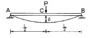
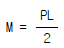
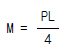
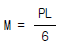
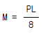
(정답률: 24%)
12. 주어진 T형보 단면의 캔틸레버에서 최대 전단 응력을 구하면 얼마인가? (단, T형보 단면의 ＩN.A=86.8cm4 이다.)
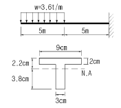
- 1456.8 kg/cm2
- 1497.2 kg/cm2
- 1520.3 kg/cm2
- 1533.2 kg/cm2
(정답률: 50%)
13. 다음 그림에서 처짐각 θA 는?
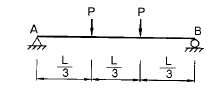
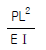
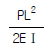
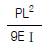
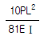
(정답률: 50%)
14. 다음 단면의 도심을 지나는 x축에 대한 단면2차 모멘트를 구하면?
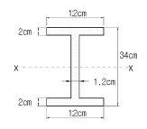
- 15004cm4
- 14004cm4
- 13004cm4
- 12004cm4
(정답률: 20%)
15. 평면응력상태 하에서의 모아(Mohr)의 응력원에 대한 설명 중 옳지 않은 것은?
- 최대 전단응력의 크기는 두 주응력의 차이와 같다.
- 모아 원의 중심의 x 좌표값은 직교하는 두 축의 수직 응력의 평균값과 같고 y 좌표값은 0이다.
- 모아 원이 그려지는 두 축 중 연직(y)축은 전단응력의 크기를 나타낸다.
- 모아 원으로부터 주응력의 크기와 방향을 구할 수있다.
(정답률: 알수없음)
16. 그림과 같은 구조물에서 A점의 휨모멘트의 크기는?
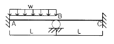
- 1/12 x (w L2)
- 7/24 x (w L2)
- 5/48 x (w L2)
- 11/96 x (w L2)
(정답률: 57%)
17. 그림과 같이 단순보에 하중 P가 경사지게 작용시 A점에서의 수직반력 VA를 구하면?
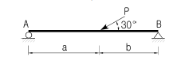
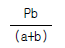
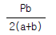
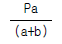
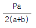
(정답률: 58%)
18. 양단이 고정된 기둥에 축방향력에 의한 좌굴하중 Pcr을 구하면? (E:탄성계수 Ｉ:단면2차 모멘트 L:기둥의 길이)
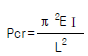
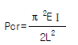
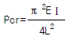
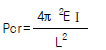
(정답률: 65%)
19. 단순보의 중앙에 수평하중 P가 작용할 때 B점에서의 처짐 각을 구하면?
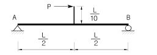
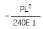
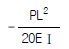
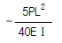
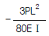
(정답률: 34%)
20. 다음의 부정정 구조물을 모멘트 분배법으로 해석하고자 한다. C점이 롤러지점임을 고려한 수정 강도계수에 의하여 B점에서 C점으로 분배되는 분배율 fBC를 구하면?
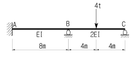
- 1/2
- 3/5
- 4/7
- 5/7
(정답률: 50%)
2과목: 측량학
21. 노선설치에서 단곡선을 설치할 때 곡선의 중앙종거(M)를 구하는 식은?
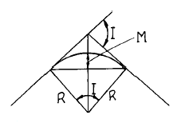
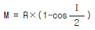
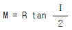
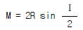
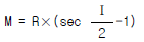
(정답률: 43%)
22. 전진법(前進法)에 의하여 6각형의 토지를 측정하였다. 측점 A를 출발하여 B,C,D,E,F,A에 돌아 왔을 때 폐합오차가 30cm이었다면 측점 D의 오차 분배량은? (단, AB = 60m, BC = 40m, CD = 30m, DE = 50m, EF = 20m, FA = 50m)
- 0.072m
- 0.120m
- 0.156m
- 0.216m
(정답률: 47%)
23. 지오이드(Geoid)에 대한 설명 중 옳지 않은 것은?
- 평균해수면을 육지까지 연장하여 지구전체를 둘러싼 곡면이다.
- 지오이드면은 등포텐셜면으로 중력방향은 이 면에 수직이다.
- 지오이드는 지표 위 모든 점의 위치를 결정하기 위해 수학적으로 정의된 타원체이다.
- 실제로 지오이드면은 굴곡이 심하므로 측지측량의 기준으로 채택하기 어렵다.
(정답률: 23%)
24. 주점기선장이 밀착사진에서 10cm일 때 25cm× 25cm인 항공사진의 중복도는?
- 50%
- 60%
- 70%
- 80%
(정답률: 알수없음)
25. 대단위 지역의 삼각측량에서 구면삼각형에 대한 설명으로 옳지 않은 것은?
- 세변이 대원의 호로된 삼각형을 구면삼각형이라 한다
- 평면측량에서 이용되는 평면각은 대부분 타원체면이나 구면삼각형에 관한 것이다.
- 구면삼각형의 세내각의 합이 180° 를 넘을때 초과 된량을 구과량이라 한다.
- 구과량은 구면삼각형의 면적에 비례하고 구의 반경의 제곱에 반비례한다.
(정답률: 19%)
26. 다음 등고선에서 AB 사이의 수평거리가 60m이면 AB 선의 경사는?
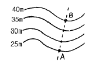
- 10%
- 15%
- 20%
- 25%
(정답률: 60%)
27. 어느 하천의 최대 수심 4m인 장소에서 깊이를 변화시켜서 유속관측을 행할 때, 표와 같은 결과를 얻었다. 3점법에 의해서 유속을 구하면 그 값은?
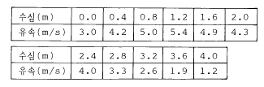
- 3.9m/s
- 4.1m/s
- 4.3m/s
- 5.3m/s
(정답률: 27%)
28. 다음 축척에 대한 설명 중 옳은 것은?
- 축척 1/500 도면상 면적은 실제면적의 1/1000 이다.
- 축척 1/600의 도면을 1/200로 확대했을 때 도면의 면적은 3배가 된다.
- 축척 1/300 도면상 면적은 실제면적의 1/9000 이다.
- 축척 1/500인 도면을 축척 1/1000로 축소했을 때 도면의 면적은 1/4 이 된다.
(정답률: 50%)
29. 도로시공에서 단곡선의 외선장(E)는 10m, 교각(I)는 60°일 때에 이 단곡선의 접선장(TL)은?
- 42.4m
- 37.2m
- 32.4m
- 27.3m
(정답률: 24%)
30. 다음과 같은 수준측량에서 B점의 지반고(Elevation)는 얼마인가? (단, α= 12°13′00″, A점의 지반고 = 46.40m H I = 1.54m(기계고), Rod Reading = 1.30m AB = 46.8m(수평거리))
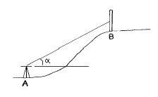
- 55.23m
- 56.53m
- 56.77m
- 58.07m
(정답률: 17%)
31. 다음 삼각측량의 결과로부터 BC 의 변장을 구하면? (단, ∠A = 54° 29' 13", ∠B = 44° 11' 22", ∠C = 81° 19' 34", AB = 500m)
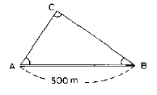
- 352.544m
- 382.549m
- 411.697m
- 442.700m
(정답률: 40%)
32. 다각측량의 각관측 방법 중 방위각법에 대한 설명이 아닌 것은?
- 각 측선이 일정한 기준선과 이루는 각을 우회로 관측하는 방법이다.
- 지역이 험준하고 복잡한 지역에서는 적합하지 않다.
- 각각이 독립적으로 관측되므로 오차 발생시 오차의 영향이 독립적이므로 이후의 측량에 영향이 없다.
- 각관측값의 계산과 제도가 편리하고 신속히 관측할수 있다.
(정답률: 알수없음)
33. 측량에서 위치를 좌표로 표시할때 U.T.M 좌표계에서는 우리나라가 52S 부분에 속한다. 이 좌표는 경도를 어디서 어떠한 방법으로 구분한 것인가?
- 경도 180° 에서 동쪽으로 6° 씩 구분한 것
- 경도 180° 에서 서쪽으로 8° 씩 구분한 것
- 경도 0° 에서 동쪽으로 8° 씩 구분한 것
- 경도 0° 에서 서쪽으로 6° 씩 구분한 것
(정답률: 22%)
34. 노선에 곡선반경 R=600m인 곡선을 설치할 때, 현의 길이 ℓ =20m에 대한 편각은?
- 54′ 18″
- 55′ 18″
- 56′ 18″
- 57′ 18″
(정답률: 46%)
35. 기선 D=20m, 수평각 α =80° , β =70° , 연직각 V=40° 를 측정하였다. 높이 H 는? (단, A, B, C 점은 동일 평면임)
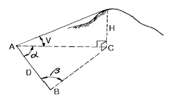
- 31.54m
- 32.42m
- 32.63m
- 33.56m
(정답률: 50%)
36. 다음과 같은 도형 ABCD의 면적을 수식으로 표현하면? (단, 곡선 AB를 2차 곡선으로 가정함)
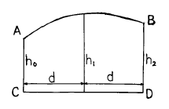
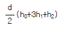
(정답률: 23%)
37. 도로의 종단곡선으로 주로 사용되는 곡선은 다음중 어느 것인가?
- 2차 포물선
- 3차 포물선
- 클로소이드
- 렘니스케이트
(정답률: 29%)
38. 촬영기준면의 표고가 200m인 평지를 사진축척 1/10000로 촬영한 연직사진의 촬영기준면으로부터의 비행고도는? (단, 카메라의 화면거리(principal distance)는 15㎝임)
- 1500m
- 1600m
- 1700m
- 1800m
(정답률: 8%)
39. 다음 중 지형 공간 정보 체계의 자료 처리 체계로 가장 옳게 배열된 것은?
- 부호화 - 자료입력 - 자료정비 - 조작처리 - 출력
- 자료입력 - 부호화 - 자료정비 - 조작처리 - 출력
- 자료입력 - 자료정비 - 부호화 - 조작처리 - 출력
- 자료입력 - 조작처리 - 자료정비 - 부호화 - 출력
(정답률: 38%)
40. 노선에 있어서 곡선의 반경만이 2배로 증가하면 캔트(cant)의 크기는?
(정답률: 29%)
3과목: 수리학 및 수문학
41. 다음 강우강도와 지속기간을 나타낸 사항 중 옳지 않은 것은?
- 강우강도는 단위시간에 내리는 강우량을 의미한다.
- 일반적으로 강우강도가 크면 클수록 강우가 계속되는 기간은 짧다.
- 강우강도와 지속기간의 관계는 모든 지역에서 대체로 동일한 값으로 나타난다.
- 강우강도와 지속기간의 관계를 알면 설계유량의 결정에 유효하게 사용될 수 있다.
(정답률: 42%)
42. 폭 1.0m, 월류수심 0.4m인 사각형 위어(weir)의 유량은? (단, Francis 공식 : Q=1.84Boh3/2에 의하며, Bo : 유효폭, h : 월류수심, 접근유속은 무시하며 양단수축이다.)
- 0.428m3/sec
- 0.483m3/sec
- 0.536m3/sec
- 0.557m3/sec
(정답률: 27%)
43. Bernoulli의 정의로서 가장 옳은 것은?
- 동일한 유선상에서 유체입자가 가지는 Energy는 같다
- 동일한 단면에서의 Energy의 합이 항상 같다.
- 동일한 시각에는 Energy의 량이 불변한다.
- 동일한 질량이 가지는 Energy는 같다.
(정답률: 알수없음)
44. 직경 80cm인 관수로에 물이 가득 차서 흐를 때 경심(hydraulic radius)은?
- 10.0cm
- 20.0cm
- 40.0cm
- 80.0cm
(정답률: 47%)
45. 1시간 간격의 강우량이 15.2mm, 25.4mm, 20.3mm, 7.6mm이다. 지표 유출량이 47.9mm 일 때 Ф -index는?
- 5.15mm/hr
- 2.58mm/hr
- 6.25mm/hr
- 4.25mm/hr
(정답률: 8%)
46. 수심 2m, 폭 4m인 콘크리트 직사각형수로의 유량은? (단, 조도계수 n = 0.012, 경사Ⅰ= 0.0009 임)
- 15m3/sec
- 20m3/sec
- 25m3/sec
- 30m3/sec
(정답률: 알수없음)
47. 다음중 한계수심에 대한 설명중 옳지 않은 것은?
- 한계수심에서 비에너지가 최소가 된다.
- 한계수심보다 수심이 작은 흐름이 상류이고 큰 흐름이 사류이다.
- 한계수심으로 흐를 때 유량이 최대가 된다.
- 유량이 일정할 때 한계수심은 비에너지의
 이다.
이다.
(정답률: 29%)
48. 관수로에서 상대조도란 무엇인가?
- 관직경에 대한 관벽의 조도와의 비
- 최대유속에 대한 관벽의 조도와의 비
- 평균유속에 대한 관벽의 조도와의 비
- 한계 Reynolds 수에 대한 관벽의 조도와의 비
(정답률: 20%)
49. 다음 중 일반적으로 합리식의 유출계수(C)가 가장 큰 지역은?
- 교외 주거 지역
- 공원, 묘역
- 도심 상업 지역
- 철도 지역(철도 조차장)
(정답률: 알수없음)
50. 단위 유량도 합성방법이 아닌 것은?
- Snyder방법
- SCS방법
- Clark방법
- Horton방법
(정답률: 23%)
51. 지름 4㎝의 원형단면의 수맥(水脈)이 그림과 같이 구부러 질 때, 곡면을 지지하는데 필요한 힘 Px와 Py는? (단, 수맥의 속도는 15m/sec이고, 마찰은 무시한다.)
- Px = 0.01⑤5t, Py = 0.03939t
- Px = 0.01⑤5t, Py = 0.01⑤5t
- Px = 0.01⑤5t, Py = 0.02⑤5t
- Px = 0.1⑤5t, Py = 0.3939t
(정답률: 39%)
52. 면적이 400m2 인 여과지의 동수경사가 0.⑤이고 여과량이 1m3/sec이면 이 여과지의 투수계수는?
- 1cm/sec
- 3cm/sec
- 5cm/sec
- 7cm/sec
(정답률: 30%)
53. Darcy-Weisbach 의 마찰손실계수가 (Re: 레이놀즈수)이며 지름 0.2㎝인 유리관속을 유량 0.8cm3/sec로 흐를 때 관의 길이 1.0m의 손실수두는? (단, 동점성계수 ν = 1.12× 10-2cm2/sec 임)
- hL = 11.6㎝
- hL = 23.3㎝
- hL = 2.33㎝
- hL = 1.16㎝
(정답률: 17%)
54. 개수로의 흐름에 가장 영향을 많이 끼치는 것은?
- 유체의 밀도
- 관성력
- 중력
- 점성력
(정답률: 58%)
55. 강우깊이-유역면적-지속시간(Depth-Area-Duration:DAD)관계 곡선에 관한 설명 중 틀린 것은?
- DAD작성시 대상유역의 지속시간별 강우량이 필요하다
- 최대평균우량은 지속시간에 비례한다.
- 최대평균우량은 유역면적에 반비례한다.
- 최대평균우량은 재현기간과 반비례한다.
(정답률: 47%)
56. 다음의 부체에 관한 설명중 옳지 않은 것은?
- 부심(B)과 부체의 중심(G)이 동일 연직선 상에 올 때 안정을 유지한다.
- 중심(G)이 부심(B)보다 아래 쪽에 있으면 안정하다.
- 경심(M)이 중심(G)보다 낮을 경우 안정하다.
- 경심(M)이 중심(G)보다 높을 경우 복원 모멘트가 발생된다.
(정답률: 22%)
57. 하상계수(河狀係數)란 무엇인가?
- 대하천의 주요지점에서의 풍수량과 저수량의 비
- 대하천의 주요지점에서의 최소유량과 최대유량의 비
- 대하천의 주요지점에서의 홍수량과 하천유지유량의 비
- 대하천의 주요지점에서의 최소유량과 갈수량의 비
(정답률: 40%)
58. 지름이 20cm, 높이 30cm인 원통 모양의 그릇에 물을 가득 채우고 세웠을 때 그릇의 밑바닥에 작용하는 전수압은?
- 9.42kg
- 18.84kg
- 94.2kg
- 188.4kg
(정답률: 32%)
59. 폭 11m인 직사각형단면 수로에 0.6m의 수심으로 25m3/sec의 유량이 흐른다. 조도계수 n=0.025, 에너지보정계수 α=1일 때 한계수심은?
- 0.146m
- 0.527m
- 0.808m
- 0.652m
(정답률: 24%)
60. 지하수의 흐름을 나타내는 Darcy 법칙에 관한 설명중 틀린 것은?
- Re>10인 흐름과 대수층 내에 모관수대가 존재하는 흐름에만 적용된다.
- 투수물질은 균질 등방성이며, 대수층내의 모관수대는 존재하지 않는다.
- 유속은 토양간극사이를 흐르는 평균유속이며, 동수경사에 비례한다.
- 투수계수는 물의 흐름에 대한 흙의 저항정도를 표현하는 계수로서, 속도와 차원이 같다.
(정답률: 40%)
4과목: 철근콘크리트 및 강구조
61. 옹벽에서 T형보로 설계하여야 하는 부분은?
- 앞부벽식 옹벽의 앞부벽
- 뒷부벽식 옹벽의 전면벽
- 앞부벽식 옹벽의 저판
- 뒷부벽식 옹벽의 뒷부벽
(정답률: 53%)
62. 그림과 같은 단철근 직사각형보에서 강도설계법에 의하여 압축력 C를 구한 값 중 옳은 것은? (단, fck = 21MPa, a = 85.2mm)
- 300 kN
- 340 kN
- 380 kN
- 420 kN
(정답률: 20%)
63. 다음 필렛용접의 전단응력은 얼마인가?
- 67.72MPa
- 70.72MPa
- 72.72MPa
- 75.72MPa
(정답률: 18%)
64. 나선철근 기둥의 심부지름 350mm, 기둥단면의 지름 450mm인 단면에 나선철근 D10(71.3mm2)을 배근할 때 나선철근의 최대 순간격은?(단, fck = 28MPa, fy = 400MPa이다.)
- 30mm
- 35mm
- 40mm
- 45mm
(정답률: 10%)
65. 철근콘크리트 부재의 전단철근에 관한 다음 설명 중 옳지 않은 것은?
- 주인장철근에 30° 이상의 각도로 구부린 굽힘철근도 전단철근으로 사용할 수 있다.
- 전단철근의 설계기준 항복강도는 300MPa을 초과할 수 없다.
- 부재축에 직각으로 설치되는 스터럽의 간격은 0.5d이하, 600mm이하로 하여야 한다.
- 최소전단 철근은
 의 단면적을 두어야 한다.(s:전단철근의 간격(mm), bw:복부의 폭(mm))
의 단면적을 두어야 한다.(s:전단철근의 간격(mm), bw:복부의 폭(mm))
(정답률: 54%)
66. 다음 철근 중에서 휨모멘트에 의한 응력을 받지 않는 철근은?
- 압축철근
- 정철근
- 사인장 철근
- 주철근
(정답률: 54%)
67. 정착에 대한 위험단면이 아닌 곳은?
- 경간 내에서 인장철근이 끝난 곳
- 휨부재에서 최대 응력점
- 지지점에서 d/2 떨어진 단면
- 경간내에서 인장철근이 절곡된 곳
(정답률: 40%)
68. T형 PSC 보에 설계하중을 작용시킨 결과 보의 처짐은 0이었으며, 프리스트레스 도입단계부터 부착된 계측장치로 부터 상부 탄성변형률 ε =3.5×10-4을 얻었다. 콘크리트 탄성계수 Ec=26000MPa, T형보의 단면적 Ag=150000mm2, 유효율 R=0.85일 때, 강재의 초기 긴장력 Pi를 구하면?
- 1606kN
- 1365kN
- 1160kN
- 2269kN
(정답률: 50%)
69. 그림에 나타난 직사각형 단철근 보가 공칭 휨강도 Mn에 도달할 때 인장철근의 변형률은 얼마인가? (철근 D22 4개의 단면적은 1548mm2, fck=28MPa, fy=350MPa이다.)
- 0.003
- 0.0⑤
- 0.010
- 0.012
(정답률: 25%)
70. 단철근 직사각형보에서 부재축에 직각인 전단 보강 철근이 부담해야 할 전단력 Vs가 350kN 이라 할 때 전단 보강 철근의 간격 s는 얼마 이하라야 하는가? (단, Av = 253mm2, fy = 400MPa, fck = 28MPa, bw = 300mm, d = 580mm)
- 145 mm
- 168 mm
- 186 mm
- 290 mm
(정답률: 17%)
71. 직사각형 단면의 콘크리트 단순보에 단면도심으로부터 e만큼 상향으로 편심된 위치를 작용점으로 포물선형 강선을 배치하여 프리스트레스력 P로 인장하였다. P의 작용점에서의 기울기가 수평면과 θ 이었을 때, 이 힘이 콘크리트보에 작용하는 등가하중이 아닌 것은?
- 지점의 수직방향 힘 Psinθ
- 도심축 방향의 압축력 Pcosθ
- 양단 휨 모멘트 M = Pe
- 보중앙의 상방향 집중하중 2Psinθ
(정답률: 16%)
72. 강도설계에서 fck =35MPa, fy = 350MPa를 사용하는 단철근 직사각형 휨부재 단면의 균형철근비는?
- 0.035
- 0.039
- 0.043
- 0.047
(정답률: 47%)
73. 콘크리트와 철근이 일체가 되어 외력에 저항하는 철근콘크리트 구조에 관한 설명 중 틀린 것은?
- 콘크리트 속에 묻힌 철근은 거의 부식하지 않는다.
- 콘크리트와 철근의 부착강도가 크다.
- 콘크리트와 철근의 탄성계수는 거의 같다.
- 콘크리트와 철근의 열에 대한 팽창계수는 거의 같다.
(정답률: 50%)
74. 보의 경간이 10m 이고, 양쪽 슬래브의 중심간 거리가 2.0m인 대칭형 T형보에 있어서 유효 플랜지 폭은? (여기서, 복부폭 bw=500mm, 플랜지 두께 t=100mm 이다.)
- 2000mm
- 2100mm
- 2500mm
- 3000mm
(정답률: 47%)
75. 그림(a)와 같은 띠철근 기둥단면의 평형재하상태에 대해 해석한 결과 (b)와 같이 콘크리트의 압축력 Cc = 900kN, 압축철근의 압축력 Cs = 200kN, 인장철근의 인장력 Ts = 30kN을 얻었다. 이 기둥의 공칭 편심하중 P의 크기는?
- 1000kN
- 800kN
- 750kN
- 700kN
(정답률: 19%)
76. 1방향슬래브에서 두께 180mm, 단위 폭(1m)당의 소요철근량 1550mm2 일 때 D22(단면적 387mm2) 철근을 사용한다. 최대 휨모멘트가 일어나는 단면에서 철근의 중심간격은 얼마로 하면 좋은가?
- 250mm
- 280mm
- 300mm
- 330mm
(정답률: 10%)
77. fck = 28MPa, fy = 350MPa로 만들어지는 보에서 압축 이형 철근으로 D29(공칭지름 28.6mm)를 사용한다면 기본정착길이는?(오류 신고가 접수된 문제입니다. 반드시 정답과 해설을 확인하시기 바랍니다.)
- 412mm
- 446mm
- 473mm
- 522mm
(정답률: 30%)
78. 강도설계법에 의한 전단 설계에 대한 설명 중 틀린 것은? (단, d = 유효 깊이, bw = 복부폭, fck = 콘크리트의 설계기준 강도(MPa), Vu = 계수전단력, φVc = 콘크리트에 의한 전단강도)
- 일반적으로 전단철근의 설계기준항복강도는 400MPa를 초과할 수 없다.
- 전단철근이 부담하는 전단강도 Vs는
 를 초과할 수 없다.
를 초과할 수 없다. - 전단철근으로 사용된 스터럽은 압축연단에서 d/2 만큼 연장되어야 한다.
- 일반적으로 Vu가 φVc의 1/2을 초과하는 경우는 최소 단면적의 전단철근을 배근하여야 하는데, 슬래브와기초판에는 최소 단면적의 전단철근을 배치하지 않아도 된다.
(정답률: 0%)
79. 시방서에 규정된 강재의 부식에 대한 환경조건에 의한 철근 콘크리트 구조물의 허용균열폭(mm)을 기술한 것중 잘못된 것은? (단, tc는 콘크리트의 최소피복두께(mm))
- 건조 환경 : 0.006tc
- 습윤 환경 : 0.0⑤tc
- 부식성 환경 : 0.004tc
- 고부식성 환경 : 0.003tc
(정답률: 18%)
80. 다음과 같은 단면을 갖는 프리텐션 보에 초기긴장력 Pi=450kN이 작용할 때, 콘크리트 탄성변형에 의한 프리스트레스 감소량은 얼마인가? (n=8)
- 40.94MPa
- 44.72MPa
- 49.92MPa
- 54.07MPa
(정답률: 20%)
5과목: 토질 및 기초
81. 완전히 포화된 흙의 함수비가 48%이었다. 이때 흙의 습윤단위 중량이 1.91t/m3이었다. 이 흙의 비중은 얼마인가?
- 3.39
- 3.09
- 2.74
- 2.69
(정답률: 20%)
82. 토목 섬유의 주요기능 중 옳지 않은 것은?
- 보강(Reinforcement)
- 배수(Drainage)
- 댐핑(Damping)
- 분리(Separation)
(정답률: 46%)
83. Sand drain에 대한 Paper drain 공법의 장점 설명 중 옳지 않은 것은?
- 횡방향력에 대한 저항력이 크다
- 시공지표면에 sand mat가 필요 없다
- 시공속도가 빠르고 타설시 주변을 교란시키지 않는다
- 배수단면이 깊이에 따라 일정하다
(정답률: 9%)
84. 그림과 같은 옹벽배면에 작용하는 토압의 크기를 Rankine의 토압공식으로 구하면?
- 4.2t/m
- 3.7t/m
- 4.7t/m
- 5.2t/m
(정답률: 39%)
85. Jaky의 정지토압계수를 구하는 공식 Ko=1-sinø 가 가장잘 성립하는 토질은?
- 과압밀점토
- 정규압밀점토
- 사질토
- 풍화토
(정답률: 36%)
86. 그림에서 흙의 단면적이 40cm2이고 투수계수가 0.1㎝/sec일 때 흙속을 통과하는 유량은?
- 1cm3/sec
- 1m3/hr
- 100cm3/sec
- 100m3/hr
(정답률: 10%)
87. 표준관입시험에 관한 설명 중 틀린 것은?
- 고정 piston 샘플러를 사용한다.
- 해머무게 64㎏ 이다.
- 해머낙하높이 76㎝ 이다.
- 30㎝ 관입에 필요한 낙하회수를 N치라 한다.
(정답률: 알수없음)
88. 주동토압을 PA, 수동토압을 PP, 정지토압을 P0라 할 때 토압의 크기 순서는?
- PA > PP > P0
- PP > P0 > PA
- PP > PA > P0
- P0 > PA > PP
(정답률: 28%)
89. 압밀시험에 사용된 시료의 교란으로 인한 영향을 나타낸 것으로 옳은 것은?
- e-log P 곡선의 기울기가 급해진다.
- e-log P 곡선의 기울기가 완만해진다.
- 선행압밀하중의 크기가 증가하게 된다.
- 선행압밀하중의 크기가 감소하게 된다.
(정답률: 9%)
90. 그림과 같이 물이 위로 침투하는 수조에서 분사현상이 발생하기 위한 수두(h)는 최소 얼마를 초과하여야 하는가? (단, 수조 속에 있는 모래의 비중은 2.60, 간극비는 0.60, 모래층의 두께는 2.5m이다.)
- 1.0 m
- 1.5 m
- 2.0 m
- 2.5 m
(정답률: 31%)
91. 흙의 입도분포에서 균등계수가 가장 큰 흙은?
- 특히 모래자갈이 많은 흙
- 실트나 점토가 많은 흙
- 모래자갈 및 실트,점토가 골고루 섞인 흙
- 모래나 실트가 특히 많은 흙
(정답률: 10%)
92. 내부마찰각이 30° , 단위중량이 1.9t/m3인 흙의 인장균열 깊이가 3m일 때 점착력은?
- 1.65t/m2
- 1.70t/m2
- 1.75t/m2
- 1.80t/m2
(정답률: 22%)
93. 점토층의 두께 5m, 간극비 1.4, 액성한계 50%이고 점토층위의 유효상재 압력이 10t/m2에서 14t/m2으로 증가할때의 침하량은? (단, 압축지수는 흐트러지지 않은 시료에 대한 Terzaghi & Peck의 경험식을 사용하여 구한다.)
- 8㎝
- 11㎝
- 24㎝
- 36㎝
(정답률: 36%)
94. 크기가 1.5m× 1.5m 인 직접기초가 있다. 근입깊이가 1.0m일 때, 기초가 받을 수 있는 최대허용하중을 Terzaghi방법에 의하여 구하면? (단, 기초지반의 점착력은 1.5t/m2, 단위중량은 1.8t/m3, 마찰각은 20° 이고 이 때의 지지력 계수는 Nc=17.69, Nq=7.44, Nr=3.64 이며, 허용지지력에 대한 안전율은 4.0으로 한다.)
- 약 29t
- 약 39t
- 약 49t
- 약 59t
(정답률: 13%)
95. 흙의 종류에 따른 아래 그림과 같은 다짐곡선들 중 옳은 것은?
- Ⓐ : ML, Ⓒ : SM
- Ⓐ : SW, Ⓓ : CL
- Ⓑ : MH, Ⓓ : GM
- Ⓑ : GC, Ⓒ : CH
(정답률: 53%)
96. 토질조사에서 사운딩(Sounding)에 관한 설명 중 옳은 것은?
- 동적인 사운딩 방법은 주로 점성토에 유효하다.
- 표준관입 시험(S.P.T)은 정적인 사운딩이다.
- 사운딩은 보링이나 시굴보다 확실하게 지반구조를 알아낸다.
- 사운딩은 주로 원위치 시험으로서 의의가 있고 예비조사에 사용하는 경우가 많다.
(정답률: 27%)
97. 단면적 20cm2, 길이 10㎝의 시료를 15㎝의 수두차로 정수위 투수시험을 한 결과 2분 동안에 150cm3의 물이 유출되었다. 이 흙의 Gs = 2.67이고, 건조중량이 420g 이었다. 공극을 통하여 침투하는 실제 침투유속 Vs는?
- 0.280㎝/sec
- 0.293㎝/sec
- 0.320㎝/sec
- 0.334㎝/sec
(정답률: 알수없음)
98. 다음의 연약지반 개량공법중에서 점성토지반에 이용되는 공법은?
- 생석회 말뚝공법
- compozer공법
- 전기충격공법
- 폭파다짐공법
(정답률: 59%)
99. 점착력이 전혀없는 순수 모래에 대하여 직접 전단시험을 하였더니 수직응력이 4.94㎏/cm2일때 2.85㎏/cm2의 전단 저항을 얻었다. 이 모래의 내부마찰각은?
- 10°
- 20°
- 30°
- 40°
(정답률: 43%)
100. 현장흙의 단위무게 시험 중 모래치환법에서 모래는 무엇을 구하려고 이용하는가?
- 시험구멍에서 파낸 흙의 중량
- 시험구멍의 체적
- 흙의 함수비
- 지반의 지지력
(정답률: 0%)
6과목: 상하수도공학
101. 대구경 관거에 유리하며 경제적이고 상반부의 아치작용에 의해 역학적으로 유리한 하수 관거의 단면형상은?
- 사다리꼴형
- 직사각형
- 말굽형
- 계란형
(정답률: 31%)
102. 다음 회전원판법(Rotating Biological Contactors)에 대한 설명으로 옳은 것은?
- 수면에 일부가 잠겨 있는 원판을 설치하여 원판에부착, 번식한 미생물군을 이용해서 하수를 정화한다.
- 보통 일차침전지를 설치하지 않고, 타원형무한수로의 반응조를 이용하여 기계식 포기장치에 의해 포기를 행한다.
- 산기장치 및 상징수배출장치를 설치한 회분조로 구성된다.
- 여상에 살수되는 하수가 여재의 표면에 부착된 미생물군에 의해 유기물을 제거하는 방법이다.
(정답률: 19%)
103. 산기식 포기장치를 사용하며 유입부에 많은 산기기를 설치하고 포기조의 말단부에는 적은 수의 산기기를 설치하는 활성슬러지의 변법은?
- 점감식 포기법(tapered aeration)
- 계단식 포기법(step aeration)
- 장기 포기법(extended aeration)
- 수정식 포기법(modified aeration)
(정답률: 20%)
104. 하천유량이 200,000m3/day이고 BOD가 1㎎/L 인 하천에 유량이 6,250m3/day이고 BOD가 100㎎/L 인 하수가 유입될때, 혼합 후의 BOD는?
- 2㎎/L
- 4㎎/L
- 6㎎/L
- 8㎎/L
(정답률: 47%)
1⑤. 분류식의 오수관거 설계시 계획하수량 결정에 고려하여야 하는 것은?
- 계획평균오수량
- 계획우수량
- 계획시간최대오수량
- 계획시간최대오수량에 우수량을 더한 값
(정답률: 31%)
106. 접합정(接合井:Junction well)이란 무엇인가?
- 수로에 유입한 토사류를 침전시켜서 이를 제거하기 위한 시설
- 종류가 다른 관 또는 도랑의 연결부, 관 또는 도랑의 굴곡부 등의 수두를 감쇄하기 위하여 그 도중에 설치하는 시설
- 양수장이나 배수지에서 유입수의 수위조절과 양수를 위하여 설치한 작은 우물
- 수압관 및 도수관에 발생하는 수압의 급격한 증감을 조정하는 수조
(정답률: 25%)
107. 송수펌프의 전양정을 H, 관로 손실수두의 합을 Σ hf, 실양정을 ha, 관로말단의 잔류속도수두를 ho라할 때 관계식으로 옳은 것은?
- H = ha + Σ hf + ho
- H = ha - Σ hf - ho
- H = ha - Σ hf + ho
- H = ha + Σ hf - ho
(정답률: 24%)
108. 펌프의 수격현상 발생을 최소화 하기 위한 대책으로 옳지 않은 것은?
- 펌프에 플라이휠(fly wheel)을 붙여 펌프의 관성을 증가시킨다.
- 관내 유속을 증가시켜 신속히 유송한다.
- 압력조절수조(surge tank)를 설치한다.
- 펌프의 급정지를 피한다.
(정답률: 32%)
109. 염소 소독을 위한 염소투입량 시험결과가 그림과 같다. 결합염소(클로라민)가 분해되는 구간과 파괴점(break point)로 옳은 것은?
- AB, C
- BC, D
- CD, D
- AB, D
(정답률: 39%)
110. 수원지에서부터 각 가정까지의 상수계통도를 나타낸 것으로 옳은 것은?
- 수원 - 취수 - 도수 - 배수 - 정수 - 송수 - 급수
- 수원 - 취수 - 배수 - 정수 - 도수 - 송수 - 급수
- 수원 - 취수 - 도수 - 송수 - 정수 - 배수 - 급수
- 수원 - 취수 - 도수 - 정수 - 송수 - 배수 - 급수
(정답률: 58%)
111. 상수도 배수관망 중 격자식 배수관망에 대한 설명으로 틀린 것은?
- 물이 정체하지 않는다.
- 사고시 단수구역이 작아진다.
- 수리계산이 복잡하다.
- 제수밸브가 적게 소요되며 시공이 용이하다.
(정답률: 50%)
112. , 유역면적 2.0㎢, 유입시간 7분, 유출계수 C=0.7, 관내유속이 1m/sec인 경우 관의 길이 500m인 하수관에서 흘러나오는 우수량은?
- 53.7m3/sec
- 35.8m3/sec
- 48.9m3/sec
- 45.7m3/sec
(정답률: 43%)
113. 도수 및 송수관거 설계시에 평균유속의 최대한도는?
- 0.3m/sec
- 3.0m/sec
- 13.0m/sec
- 30.0m/sec
(정답률: 30%)
114. 현재의 인구가 100,000명인 발전 가능성 있는 도시의장래 급수량을 추정하기 위해 인구증가 현황을 조사하니 연평균 인구증가율이 5%로 일정하였다. 이 도시의 20년후 추정인구는? (단, 등비급수 방법을 사용함.)
- 35850명
- 116440명
- 200000명
- 265330명
(정답률: 46%)
115. 병원균 등의 세균을 완전히 제거하기 위하여 사용되는 정수방법은?
- 응집
- 소독
- 여과
- 침전
(정답률: 32%)
116. 용존산소 부족곡선(DO Sag Curve)에서 산소의 복귀율(회복속도)이 최대로 되었다가 감소하기 시작하는 점은?
- 임계점
- 변곡점
- 오염직후
- 포화직전
(정답률: 42%)
117. 1L의 매스실린더에 활성슬러지를 채우고 30분간 침전시킨 후 침전된 슬러지의 부피가 180mL이었다. 이 때 MLSS가 2,000mg/L이었다면 슬러지용적지표(SVI)는?
- 90
- 100
- 180
- 200
(정답률: 15%)
118. 하수관거의 관정부식(Crown Corrosion)의 주된 원인 물질은 다음 중 어느 것인가?
- N 화합물
- S 화합물
- Ca 화합물
- Fe 화합물
(정답률: 42%)
119. 계획오수량 산정시 고려하는 사항 중 그 설명이 잘못된 것은?
- 지하수량은 1인 1일 최대오수량의 10∼20%로 한다.
- 계획1일 평균오수량은 계획1일 최대오수량의 70∼80%를 표준으로 한다.
- 계획시간 최대오수량은 계획1일 평균오수량의 1시간당 수량의 0.7∼0.9배를 표준으로 한다.
- 계획1일 최대오수량은 1인1일 최대오수량에 계획인구를 곱한 후 공장폐수량, 지하수량 및 기타 배수량을 더한 값으로 한다.
(정답률: 알수없음)
120. 다음 관거의 접합에 관한 내용 중 잘못된 것은?
- 수면접합은 수리학적으로 에너지경사선이나 계획수위를 일치시키는 것으로서 양호한 방법이다.
- 관정접합은 굴착비가 증가되어 공사비가 증대되는 단점이 있다.
- 지표경사가 큰 경우 원칙적으로 단차접합 또는 계단접합을 한다.
- 두 개의 관거가 합류하는 경우의 중심교각은 90° 이상으로 한다.
(정답률: 34%)